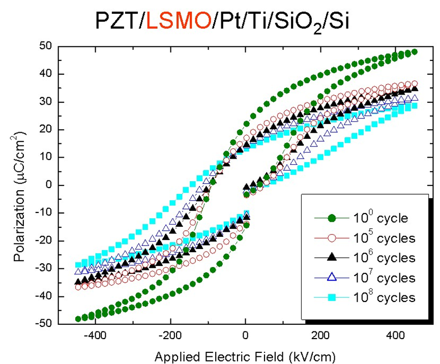
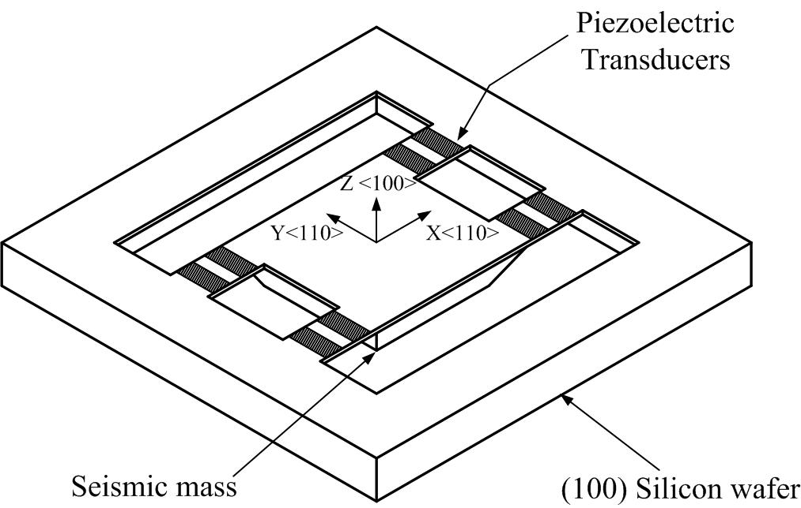
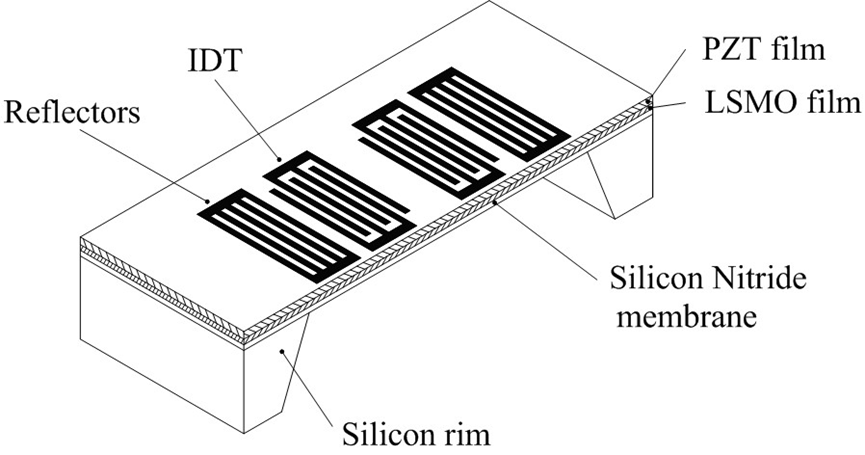
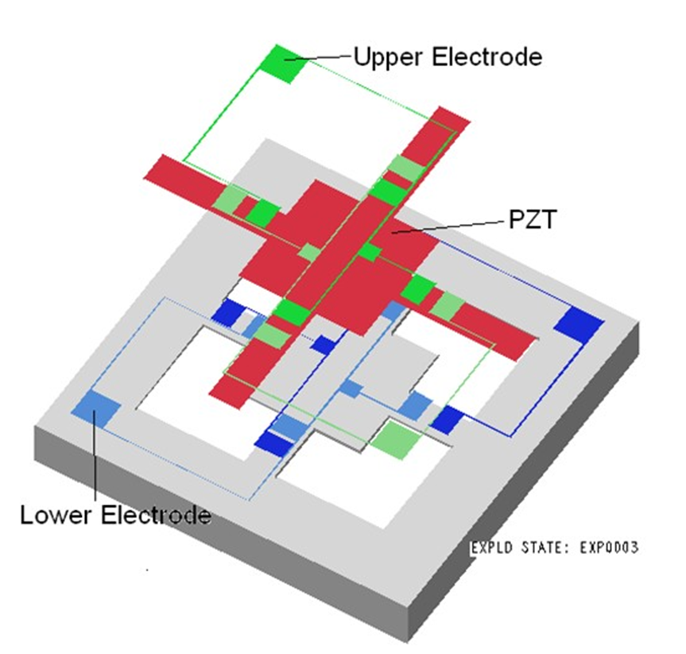

鋯鈦酸鉛薄膜於微感測元件之設計與製作
研究概述
本研究將從事機械薄膜微感測元件的微結構系統設計、模擬、元件製作及測試，以鋯鈦酸鉛薄膜微感測器為載具，採用溶膠凝膠法(Sol-Gel)鍍製PZT薄膜。
研究重點包括壓電微加速度計與聲波感測元件的設計與製造，透過系統模擬、微細加工與最佳化技術，實現高精度微感測器元件。

壓電層PE疲勞測試曲線
主要研究方向
A. 壓電微加速度計
工作原理：
- 以振動質塊將加速度轉換為慣性力
- 慣性力使支撐懸臂變形
- 安置於懸臂上的壓電薄膜將應力轉換為電壓訊號
- 朝整合式三軸加速度量測的設計與最佳化

微加速度計的製造流程
B. 聲波感測元件
工作原理：
- 以指差電極與壓電薄膜在薄膜上產生聲波訊號
- 聲波訊號的速度受傳遞薄膜特性影響
- 薄膜上的外加負荷如應力（機械感測）與質量（生物感測）改變波傳速度
- 應用於機械與液體感測、生化感測元件

FPW聲波元件之結構
研究流程
第一階段
微感測器之系統模擬與設計分析
建立數學模型，進行多物理場耦合模擬分析
第二階段
壓電薄膜感測元件設計與製造
包含微細加工與系統整合技術開發
第三階段
微感測器設計之最佳化
性能提升與可靠性驗證
微結構設計

微懸樑式加速度感測器結構圖
相關研究計畫
-
一體化三維壓電薄膜微加速度計的系統建模與設計最佳化
國科會專案計畫 100 -
以微振動結構分析雷射退火與極化條件對鋯鈦酸鉛薄膜壓電與機械特性的影響
國科會專案計畫 99 -
鐵電薄膜蘭姆波微感測元件設計與製程整合之研究
國科會專案計畫 92, 93 -
鐵電薄膜化表面波感測元件設計與製程整合之研究
國科會專案計畫 91 -
鐵電薄膜微感測元件系統模擬與設計分析 I, II, III
國科會專案計畫 87, 88, 89